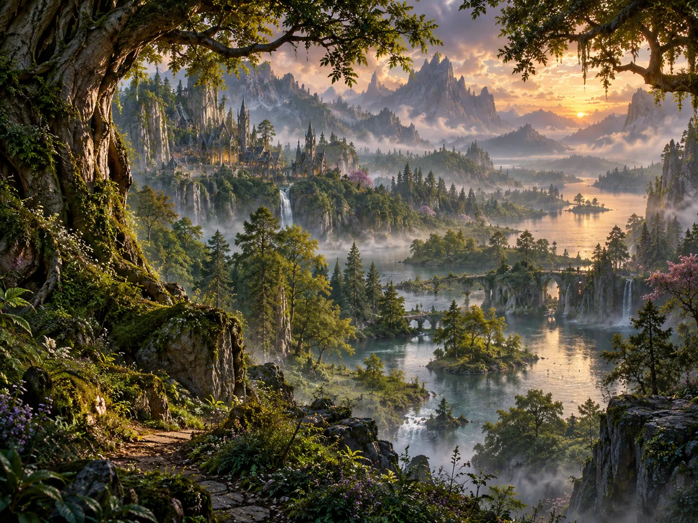
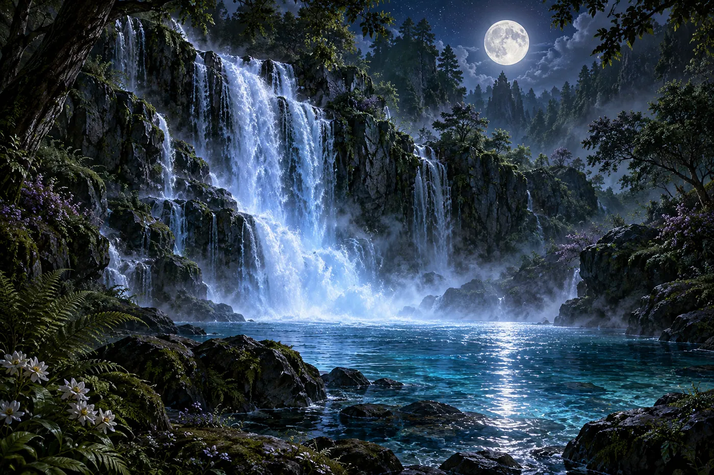

Welcome to
THE ELDERWILD
A realm of ancient forests, luminous waterways, mountains, and thriving settlements, where magic and nature are woven together. Explore its landscapes and the places that shape this living world.
✦ ❧ ✦
Explore all locations →Featured location

The Moonlit Falls
Silver-lit waters descend over dark cliffs into a cold basin surrounded by ferns and flowering shrubs.